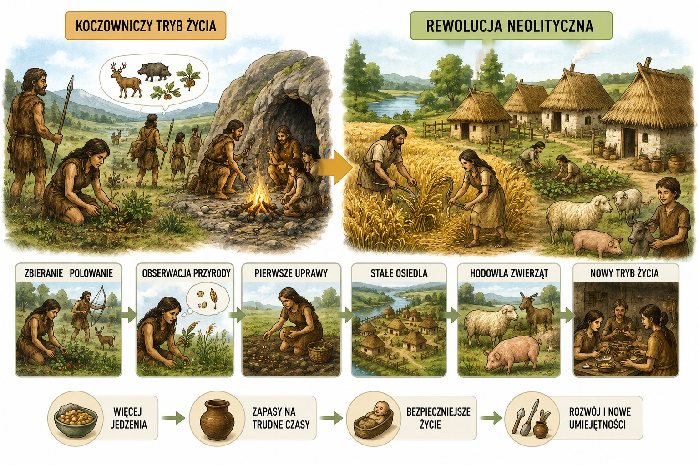

8. Rewolucja neolityczna
⚜
Przejście z koczowniczego na osiadły tryb życia, które dokonało się dzięki rolnictwu, nazywamy dziś rewolucją neolityczną. Rewolucja neolityczna była jedną z największych zmian w dziejach człowieka.
Rewolucja neolityczna – proces przejścia człowieka z koczowniczego na osiadły tryb życia.
🔄 Na czym polegała?
Około 10 tysięcy lat temu ludzie zaczęli prowadzić zupełnie inny sposób życia. Zamiast ciągle wędrować, zajęli się uprawą ziemi i hodowlą zwierząt.
- uprawa roślin
- hodowla zwierząt
- życie w jednej osadzie
➡ Wielka zmiana
- myśliwi i zbieracze
- rolnicy i hodowcy
- życie osiadłe
🛠️ Czego się nauczyli?
Nowy sposób życia wymagał nowych umiejętności. Ludzie ulepszali narzędzia i zaczęli wytwarzać przedmioty potrzebne na co dzień.
- robić lepsze narzędzia
- lepić naczynia z gliny
- tkać ubrania z wełny i lnu
🌟 Co przyniosła rewolucja?
Dzięki rolnictwu łatwiej było zdobywać żywność. Ludzi przybywało, a osady rozwijały się i stawały się coraz większe.
- więcej pożywienia
- większe osady i wsie
- początek rozwoju cywilizacji

Sowa Historyk
Rewolucja neolityczna zmieniła życie ludzi bardziej niż jakiekolwiek wcześniejsze odkrycie.
➜ Dzięki niej zaczęły powstawać wsie, miasta i pierwsze cywilizacje.